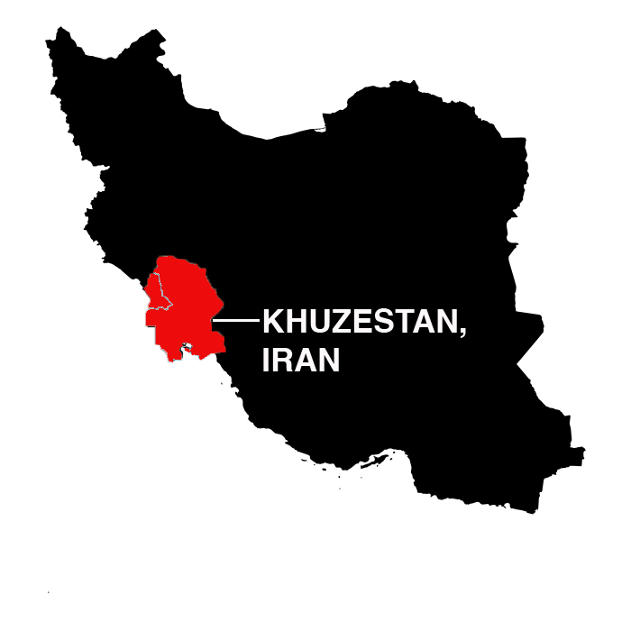

______________________________________________________________________
A
pplying for asylum in the United States is arduous: move, file and wait. The entire process is supposed to take just 180 days, but due to the high volume of refugees and torture victims applying - and a federal backlog of cases - some asylum seekers can wait up to three and a half years just to get an interview scheduled. After that, there's no guarantee that the application will be accepted.The backlog in the federal asylum system is a result of underfunding, understaffing and a severe shortage of facilities: there are only eight offices in the U.S. that schedule asylum interviews. This lack of facilities means asylum seekers might have to travel hundreds of miles for an interview. Worse, the backlog is affecting each office differently, meaning an asylum seeker's wait time could be years longer simply because he or she lives in a certain state. Check out the wait times for the eight offices:
For those who are escaping their countries after being tortured—either by the government or by cultural figureheads—the multiple-year wait time can be devastating, especially since there is no guarantee their application will be approved. They are seeking protection under the U.N. Convention Against Torture, to which the U.S. is a signatory, but the U.S. has no separate process for these victims. They are thrown into the larger, backlogged pool of all asylum seekers.
How Long Would You Have to Wait?
The waiting period for asylum seekers to get an interview varies massively depending on where they happen to be living - and the office could end up being hundreds of miles away. How long would you have to wait? And how far would you have to go?
Type in your zip code to find out:
The lack of offices disproportionately hurts asylum seekers in the Midwest, Rocky Mountains, Alaska and Hawaii. To give some perspective, someone living in Wyoming would be sent down to the Houston office, an expensive and cumbersome trip for immigrants often not working legally.
Why does this matter? The critical stage of the asylum process is the interview. An asylum will officer evaluate your identity, the story you’re presenting, and evidence you have in support of your claim — if you can produce any. But only once you've cleared the backlog can you get in the door.
“This isn’t because the asylum officers or the immigration judges aren’t working hard, they’re working super hard, but they’ve got so many cases and they’re understaffed and they’re under-resourced and congress hasn’t funded more employees, ” says Maryellen Fullerton, a law professor at Brooklyn Law School.
Fullerton says the backlog is a problem for both the asylum seekers, whose lives end up in limbo, and for the government, which can’t deport asylum seekers who don’t meet the requirements until a decision has been made.
But while securing an interview is important, actually making a credible case for yourself in your interview is what’s critical for asylum seekers. The case presented in the interview determines whether or not that 2 - 5 year wait will result in a future in the U.S. or deportation.
Asylum seekers are alleging that they are technically refugees, and are entitled to the same rights as refugees. But, in order to gain these rights they first need to prove they have a well founded fear of persecution. For torture victims, they must prove that it is “more likely than not” that they will be tortured again if deported. The interview is the chance to state their case for why they have this fear, and leading up to the interview is when they need to assemble all the pieces.
“Gathering evidence from a far away place in a different culture and a different legal system is always hard, and even harder in these circumstances because the opportunity to leave has come in a hurry,” says Fullerton. “When they see opportunity they have to move quickly and it’s hard to have documentary evidence of those kinds of horrible deeds. Whoever does them, governments or other people, tend not to leave written records of them. So it’s hard to get access to that information and present it and to make sure if you do have it you’re able to preserve it throughout your journey,” she said.
To overcome this challenge of obtaining evidence, Physicians for Human Rights, a network of over 500 clinicians across the country, provides physical and psychological evaluations of asylum seekers to back up their testimony.
“The burden is on that individual to show that they meet the requirements, that they meet the legal standard,” says Meredith Fortin, asylum program officer at Physicians for Human Rights. While it’s legally possible for an applicant to demonstrate their eligibility through their own testimony alone, supporting evidence is often critical.
During a medical evaluation a clinician will try to determine how any evidence, such as scars, on a person’s body maps onto their story of how the scar was received. According to Fortin, the psychological evaluation can also be very helpful in determining how trauma impacts an asylum seeker’s ability to report their experience.
“Trauma can impact memory, that’s very common, and that could be the type of thing that can be very challenging in court. If the evaluator feels based on their opinion and their evaluation—which often lasts several hours with the individual—some of what’s happening is memory problems related to the trauma, that can be very important to the fact-finder to know. It’s another piece of information for them to take in when they’re considering the entire picture of an individual’s testimony and credibility and story, and how well it’s corroborated by the evidence,” said Fortin.
______________________________________________________________________
Meet Amu: Doctor. Revolutionary. Torture Victim.
E
very Sunday morning, there is a call for a revolution in Iran. From a small makeshift television studio in Glendale, California, Amu —his real name withheld for privacy reasons — broadcasts on low frequency to tell a small group of people in Iran to embrace Marxism and socialism. He had done the same thing over 40 years ago, when the Shah of Iran was near takeover, but this time around he didn’t risk being beaten and whipped for his views.A respected pathologist in Khuzestan, Iran, Amu was 38 years old when the Shah’s secret police stormed his hospital office in 1974. After finding leftist literature in the drawers of his desk, they hauled him back home, where his pregnant wife watched as they tore apart the house and then took him away in a Jeep. For weeks, he was tortured.
“They lay you down on a bare bed, they tie your hands on the top, and then they put your foot at the bottom,” he remembers. “Then with a cable, they hit you on the soles of your feet, which is extremely, extremely painful. At night, they would hang me so that my feet were not on the floor.”
One out of every eight torture victims come from Iraq or Iran, and Amu is one of 1.3 million foreign-born torture survivors living in the U.S., many of whom seek asylum, according to a recent study by the Center for Victims of Torture. That figure, which is roughly the population of New Hampshire, is much higher than previously reported. Many who seek asylum share the same grim profile: two-thirds experienced severe beatings, one-third were sleep deprived and nearly all of them suffer from some form of mental trauma. Federal money has been given to clinics nationally to address mental disorders among asylum-seekers, but some say it’s a wasted effort without more funding and outreach.
In 2013, researchers at the University of California, Berkeley, found that victims of torture often hide their experiences from physicians, due to a fear of authority and the fact that doctors were sometimes involved in the original application of torture. Torture victims are also far more likely to experience depression, anxiety, sadness, insomnia and night terrors.
“It’s a large, growing, invisible population,” said Kathi Anderson, executive director of Survivors of Torture International, based in San Diego. Even when they seek out help, therapy may not be a familiar cultural practice for torture survivors. “People who come from cultures where therapists are well known are more likely to speak to therapists. In Argentina, for them to seek out therapy it’s like rolling out of bed. But in other communities there’s not even a word in their language for therapy.”
Physicians, for their part, are not always trained to spot torture survivors, even though the odds are high they’ll encounter them throughout a medical career.
To address the glaring hole in psychological and physical treatment, Congress passed the Torture Victims Relief Act in 1998. The act allocated money to regional centers for outreach and treatment coordination. But with annual funding at $25 million, the money is spread thin between centers across the country.
“It’s not sustainable,” said Anderson. “Overall there’s not enough capacity for the amount of torture survivors in our country. There’s nowhere near the funding to provide support services for those individuals.”
Unlike refugees, who are officially resettled by the federal government, asylum seekers show up unannounced at a border crossing and claim protection from persecution or harm under international law. The move is a risky one—between 2010 and 2013 an estimated 6,000 torture survivors were detained by Immigration and Customs Enforcement, according to the National Immigrant Justice Center. Those who escape detention face a complex bureaucratic asylum system, language barriers, an inability to work, and often poverty.
“So many of these people don’t have housing, or have short-term housing,” said Perth Rosen, interim director of Lutherin Immigration and Refugee Service in Baltimore. “Court cases are backlogged for so long that even if you have housing you could over-burden the good will of family members hosting you, who might also be impacted by poverty. It’s not uncommon that migrants end up in homeless shelters as they struggle to find footing.”
This instability further lowers the chances of getting meaningful treatment for PTSD or other lasting traumatic effects of torture, and some said that housing and jobs are key ways to alleviate mental problems.
“It’s like psychological first-aid,” said Maria Blacque-Belair, director of RIF Asylum Support in New York City, which offers paid urban agriculture fellowships to asylum seekers. “All of these are linked with one another. Getting housing if you don’t have a job—if you don’t have credit history it’s impossible to rent an apartment.”
Since asylum seekers—and therefore most torture victims—don’t arrive through legal channels, it’s hard to predict the numbers coming in the next few years. However, the majority of torture survivors come from a small handful of nations, such as Amu’s homeland, Iran.
After a few weeks being detained in an underground bunker, he admitted to writing a pamphlet critical of the government’s neglect of the nation’s impoverished rural areas. But when the head of SAVAK, the Shah’s secret police, asked him to admit his crime on live television, he refused.
He was convicted and sentenced to seven years in prison. Amu eventually escaped prison in 1979 during Iran’s revolution and fled to Austria on foot to seek asylum, but because his education credits didn’t transfer over (another problem among highly-skilled and well-educated asylum seekers), he found his way to the U.S. with the help of some American doctors and, finally, began to practice medicine once again.